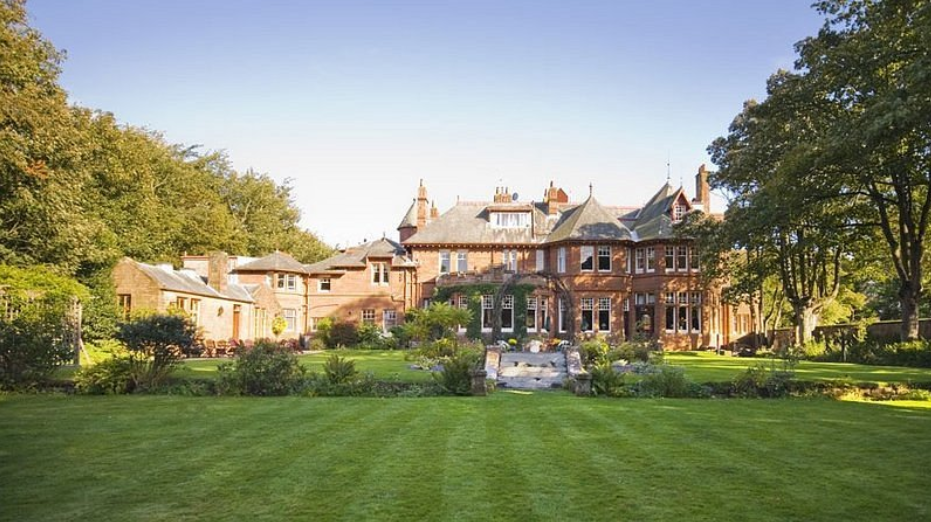
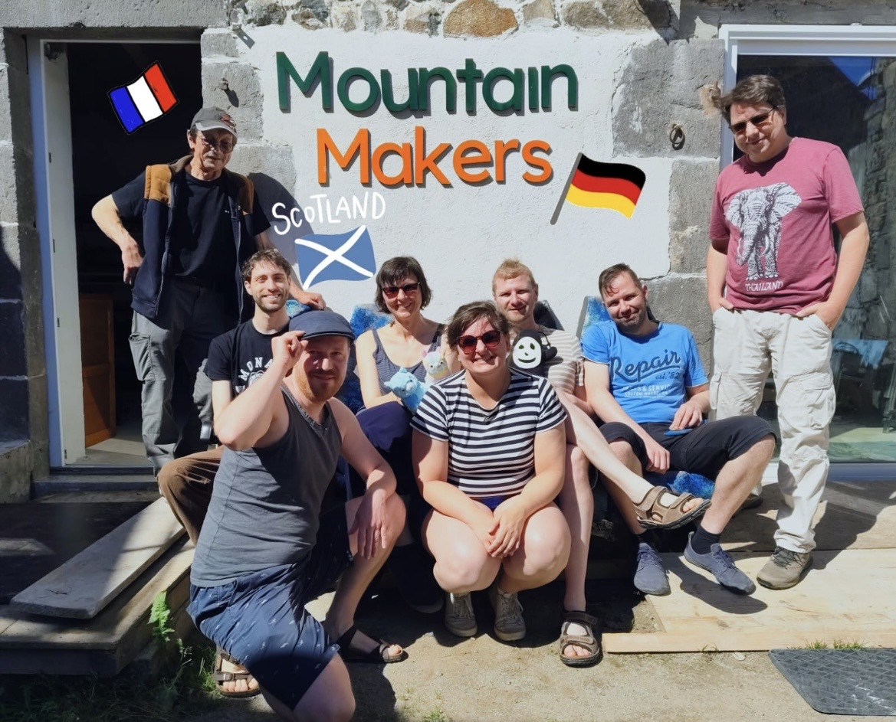
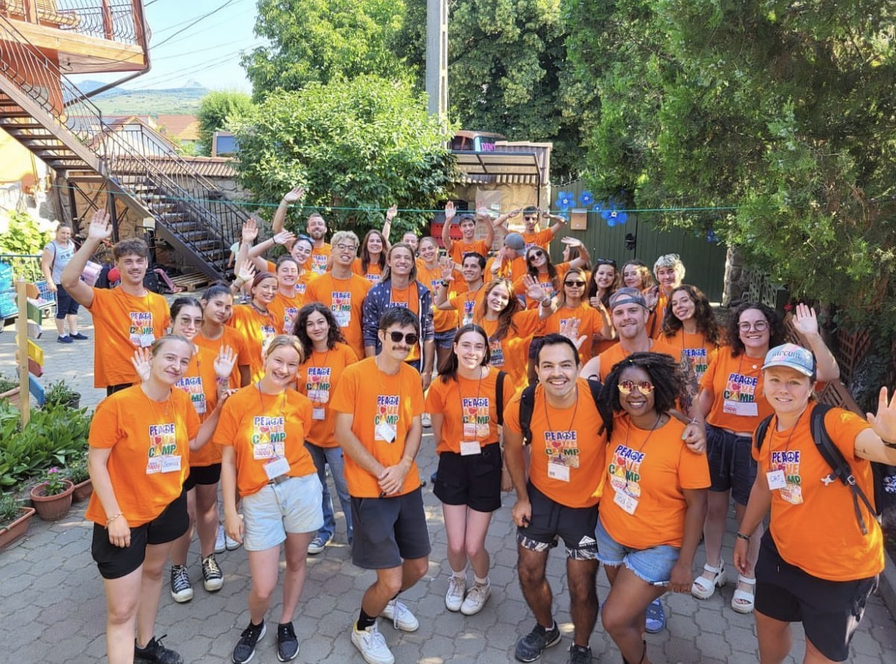
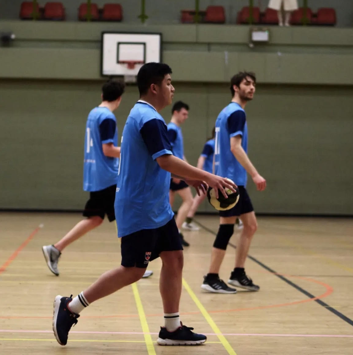
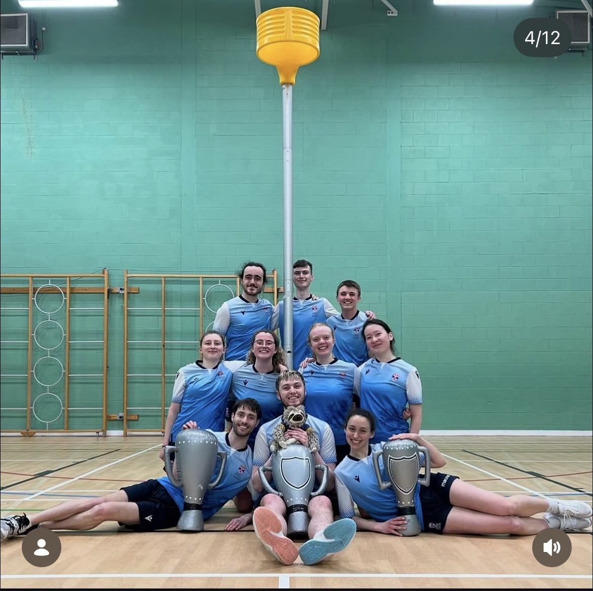
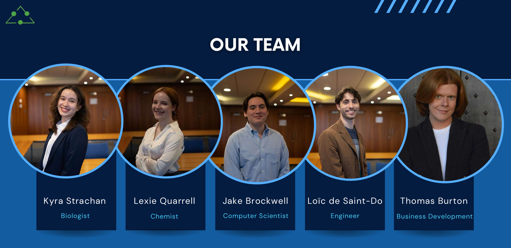

Math & Physics Graduate • Maker
I’m Loic, a mathematics and physics graduate with a strong interest in engineering, digital fabrication, and technical problem‑solving. I’ve worked across leadership, youth development, scientific communication, and makerspace environments, gaining hands‑on experience with real projects and real people. I enjoy building practical, solutions and I’m currently developing skills in Maker des Montagnes ( in France ) and soon as an ESC volunteer in Cuenca Spain.
Managed hotel chain operations, staff, logistics, and customer experience.

Oversaw budgeting, scheduling, customer relations, and operational efficiency. Implemented workflow improvements and coordinated multi‑site operations.
Supported fabrication projects, electronics, and community workshops.

Assisted with 3D printing, laser cutting, electronics repair, and workshop facilitation.
Volunteer technician supporting digital fabrication and engineering education.
Working with CNC, 3D printing, and community engineering projects.
Led activities for children and teenagers aged 8–18.

Managed groups, organised outdoor activities, and ensured safety and engagement.
Led activities for teenagers aged 13–17.
Coordinated sports, workshops, and leadership activities in an international setting.
Completed a rigorous joint degree in mathematics and physics.
Developed strong analytical, computational, and problem‑solving skills.
Represented student interests and coordinated academic feedback.
Served as 2nd‑year direct entry representative on the Physics Student Board.
Organised training, events, and club development.

Helped grow membership and coordinate national competitions.
Promoted effective altruism and global poverty reduction.
Organised events, outreach, and donor engagement.
Active club member and national championship competitor.

Competed in BUCS Nationals and contributed to club development.
Semifinalist in international cleantech innovation competition.

Developed sustainable technology concepts and delivered pitch presentations.
Wrote scientific articles and delivered public talks.
Covered physics, neuroscience, and technology topics for a student audience.
Managed partnerships and sponsorship outreach.
Coordinated funding, events, and collaborations with external organisations.
Email: desaintdorloic@gmail.com
LinkedIn: LinkedIn Link